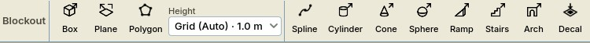

Tools
A short tour, grouped by job. Every command and its key is on the Shortcuts page; in the app Ctrl+KorF3 finds any of them.
Blockout
Pick a shape on the Blockout bar, drag on the grid or on any surface, then pull up the height. Enter confirms, Esc cancels.

Quick keys: Box Shift+B, Plane Shift+P. Height sets where a shape starts above the grid.
Draw on chooses where a shape starts: the surface under the mouse, or the grid.
- Draw Grid (Create menu) draws a flat plane cut into cells; set X segments and Z segments on the tool card. Shape it with Proportional editing.
- Click the bar's name Blockout to fold it to a thin strip; click again to open it.
Modeling
Select something first, then use a tool. Its settings show at the bottom left of the 3D view.
Shape
| Tool | Key | What it does |
|---|---|---|
| Extrude | Shift+E | Grows faces out, or walls from open edges |
| Inset | I | Shrinks faces and adds a frame around them |
| Bevel | B | Rounds or chamfers edges and corners |
| Push Through | Pushes faces into a wall until it is pierced | |
| Opening | Ctrl+Shift+O | Cuts a door or window through a wall |
| Solidify | Gives faces a thickness | |
| Hollow | Ctrl+Shift+W | Turns a solid block into a room |
| Jumble | J | Moves vertices by a pattern: hills, ridges, cells |
Cut and split
| Tool | Key | What it does |
|---|---|---|
| Loop Cut | Ctrl+R | Adds a ring of edges around the mesh |
| Cut | C | Drag a line across faces to cut them |
| Knife | Shift+K | Cuts new edges point by point |
| Subdivide | Alt+V | Splits faces into a grid |
| Slice | Shift+X | Splits whole objects along a line |
| Detach Faces | N | Moves faces into a new object |
Join and copy
| Tool | Key | What it does |
|---|---|---|
| Bridge | Shift+C | Joins two rows of edges with faces |
| Fill Hole | Ctrl+F | Closes an opening |
| Merge Objects | M | Joins objects into one |
| Boolean difference | Ctrl+−orCtrl+Shift+Num − | Cuts one object out of another |
| Mirror | Shift+Z | Mirrors objects (X; Y and Z in the menu) |
| Array | Copies in a line or around a circle | |
| Group | Ctrl+G | Parts that select and move together |
Texture and UV
| Do | How |
|---|---|
| Open the Material Browser | Ctrl+M |
| Apply the active material | Shift+T |
| Make a material from an image | Ctrl+Shift+I, or drop the image on the window |
| Pick a face's material | Shift+Right-click |
| Continue a texture across an edge | Alt+Right-click |
| Carry a texture along a strip (an arch, a pipe) | Ctrl+Alt+Right-click the next face; keep the button down to go on |
| Fit the texture to a face | Ctrl+Alt+Num 5 |
| Fit a rectangle of an atlas to each face | Shift+H |
| Copy and paste a face's UV | Ctrl+Alt+C, Ctrl+Alt+V |
| Show a UV checker | Alt+Shift+U |
A UV editor, decals and vertex colours are in the Texture menu.
Your own shader: in the Material Browser, Details → Shader → Choose… picks a .gdshader from your linked Godot game. Each of its uniforms gets a field, the 3D view shows the shader, and Godot gets it with your values.
Props
- File → Import Models… brings in GLB, glTF or FBX files (with Blender installed,
.blendand.objtoo). Dropping files on the window does the same. - Each model becomes a tile in the Props drawer Shift+M. Drag a tile into the level; the wheel turns it before you drop it.
- Mark as Prop turns your own geometry into a reusable model. Edit it once, every copy follows.
Entities
Entities are objects that do something in the game: lights, doors, coins, triggers, effects.
In Godot
A script that extends LeveldotEntity
In Leveldot
A tile in the Entities drawer
In the level
An entity with its settings
- Open the Entities drawer with Shift+A. It also holds the built-in set: lights, effects (smoke, fire, rain…), doors and lifts, Player Start, Level Exit.
- Alt+Enter shows the selected entity's settings and events.
- Make your own entity types and connect entities: Entities and logic Experimental.
- Movers make a group move on its own, without code: a door, a lift, a platform, a spinner (Add Mover to Group).
- A Physics Body falls and can be pushed in the game; Settle drops it where it comes to rest.
Levels
Level
Hall
Player Start · Level Exit
Level
Cellar
Player Start
- A project holds many levels. Switch with the level picker on top of the Outliner, or Ctrl+PgUp and Ctrl+PgDn.
- A Player Start says where the player appears; a Level Exit sends them to another level.
Check your level
| Do | Key |
|---|---|
| List problems: missing destinations, broken links | F8 |
| Show what the player collides with | Alt+Shift+K |
If something looks wrong, the status bar says so in yellow; Ctrl+Z undoes it.